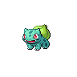

Mac에서 키우는 나만의 포켓몬
일한 만큼,
포켓몬도 자라요.
Claude Code·Codex로 작업하고,
모은 경험치로 포켓몬을 키워보세요.
M1 이상 Mac · macOS 13 이상


좋아하는 포켓몬과
시작하세요.
1~9세대 중에서 첫 파트너를 고를 수 있어요.
- 일할 때는 함께 성장
- 작업량이 경험치와 포획권으로 쌓여요.
- 쉬는 시간에는 한 판
- 내 포켓몬으로 즐기는 미니게임 9종.
- 매일 새로운 만남
- 풀숲에서 친구를 만나고, 파티를 꾸려요.
설치는 이렇게.
압축을 풀고, 앱을 옮기면 준비 끝.
- 앱 다운로드ZIP 파일의 압축을 풀어주세요.
- 응용 프로그램으로 이동PokeGarden.app을 옮긴 뒤 실행하세요.
- 파트너 선택작업 도구는 설정에서 연결할 수 있어요.
앱 실행이 차단되나요?
현재는 Apple 공증을 받지 않은 테스트 버전이라 macOS에서 실행이 제한될 수 있어요. 표시된 안내를 배포자에게 전달해 주세요.
Claude Code나 Codex가 꼭 필요한가요?
작업 보상을 받으려면 둘 중 하나를 연결해야 해요. 연결 없이도 포켓몬 포획과 미니게임을 즐길 수 있어요. 사용량은 내 맥에서 집계합니다.
업데이트해도 포켓몬은 그대로인가요?
진행 상황은 앱과 별도로 저장돼요. 새 버전을 받아 앱을 교체하면 됩니다. 교체 전 설정에서 저장 파일을 내보내 두세요.
업데이트
전체 이력 ↗v1.0 변경 내용
첫 번째 배포
- Claude Code와 Codex의 입·출력 토큰을 경험치와 포획권으로 연결합니다.
- 1~9세대 포켓몬을 만나고, 최대 네 마리의 파티를 함께 키울 수 있습니다.
- 매일 바뀌는 코스의 미니게임 9종과 아이템 교환소를 제공합니다.
미니게임 개선
- 포레스트 러시에 낭떠러지와 튀면서 굴러오는 통나무를 추가했습니다.
- 윈드 글라이더에 네 방향 기류와 움직이는 관문을 추가했습니다.
- 스카이 바운드에 높이 도약하는 발판을 추가했습니다.
설치 안내
- Apple Silicon Mac과 macOS 13 이상을 지원합니다.
- Python 런타임이 포함되어 별도로 설치하지 않아도 됩니다.
- 현재 버전은 수동 다운로드 방식입니다. 앱 내 자동 업데이트는 준비 중입니다.